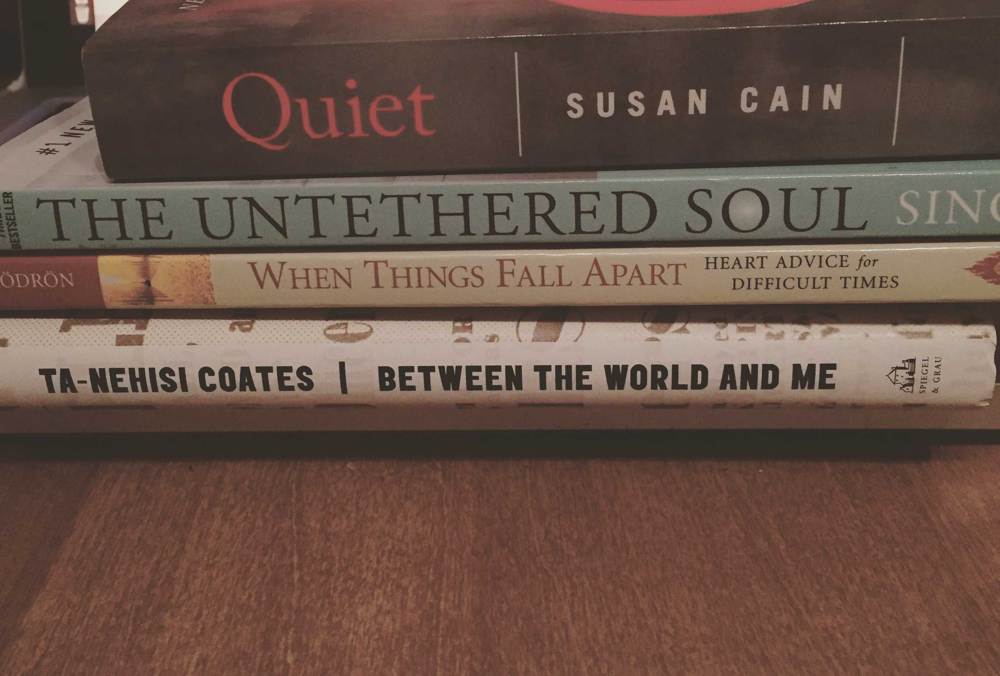

The Beliefs We Harbor
I went downtown around 7 A.M. to get some coffee and start my work day. But just before arriving at the coffee shop, I notice a disheveled man standing beneath the hood of a closed restaurant. As I get closer I realize that he’s no more than a teenager. He has on a black backpack, a messy t-shirt, and faded jeans that barely fit his large frame. I get the impression that he hasn’t showered for some time judging from his dark greasy hair.
Just another homeless guy, I think. I turn my gaze toward the coffee shop a few steps beyond him and walk.
Before entering he asks if I have a dollar to spare for a drink.I reply with my instinctual, “Sorry, I don’t have any cash on me” and walk on.
“Ok. Sorry to bother you. Have a nice night then. I mean, day.”
You too.
As I open the door, something compels me to look back at him. I don’t know what it is - his shivering, the fact that he was just a kid, or the guilt I felt for shrugging him off so easily - but I turn around.
Hey, I don’t have any cash, but I can buy you a drink with my card if you want.
He quickly accepts my offer and we go inside.
I sit at my usual table and invite him to stay, though I notice that my guard is up despite any apparent threats to my own safety.
His hands are still shaking, shivering. His sleep-deprived eyes signal pain. He sits, and I ask him for his story.
He’s 18, hardly an adult. His family is hooked on drugs. He’s never met his mom or sister, only knows that they’re in California, according to his dad.
We have many things in common: enjoyment of rap, educational values, even political views. He’s been reading at the local library and is trying to find a job to support himself.
His uncle had kicked him out of the house two weeks ago. He’s had his own fair share of drug use, although he tells me he’s trying to get clean. He claims he’s dealing with a brain tumor and is not sure how much longer he’ll be around. He hands me his college ID card and insists that he was a student at the local community college, as if to prove to me the validity of his words and existence. He’s scared.
I didn’t care whether or not the whole story was a lie, but I was saddened by the truths radiating from his presence. He was just another human being struggling to make his way in this world, like me. Only I had been put in more fortunate circumstances. The only thing that differentiated us and our lives was the life lottery.
I’m amazed that he is still able to sling a few jokes at me despite his situation. I laugh and we continue our conversation for the next hour.
It is in our nature to marginalize and distance ourselves from people who seem different from us. Consciously I know it’s unjust. Yet my actions did not reflect this thought before chatting over coffee with the person mentioned above.
It was hard, initially, to just be ‘me’ with him. It felt icky to shake his hand. I caught myself judging his past and prematurely concluding that his situation was a direct consequence of his actions. I had taken my own privilege for granted and failed to acknowledge him as another human being. I guess it’s easier to preach equality than it is to act in accordance with it.
That said, I think the cure to our unconscious, biased generalizations and categorization of people who are perceived as different from us is to constantly expose ourselves to and interact with a variety of people. We may realize in these moments that they are just like you and me.
